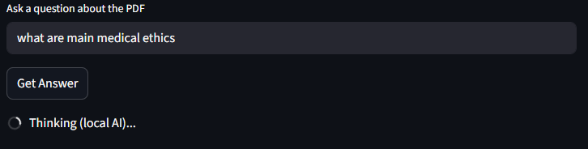

FM Transceiver Application
A configurable analog communications lab tool that transforms a static bench setup into an interactive exploration environment for signal behavior and tuning.
Learn moreComputer and Communications Engineering student at the Lebanese International University in Beirut.
I build practical systems where networking, software, and embedded technologies meet.
Selected work
A configurable analog communications lab tool that transforms a static bench setup into an interactive exploration environment for signal behavior and tuning.
Learn more

A local-first PDF assistant that enables private, contextual inquiry across long technical documents without sending files to external cloud services.
Learn more

A personal safety app designed to present essential information clearly and quickly on a mobile device, aimed at accessibility and practical guidance in stressful situations.
Learn moreI'm Rimah Boukarroum, a Computer and Communications Engineering student based in Beirut, Lebanon. My work sits at the intersection of networking and software development, with a strong interest in signal processing, embedded systems, and communication technologies. I’ve gained hands-on experience with fiber and copper infrastructure during an internship at Ogero Telecom, and I enjoy building tools and applications that solve real engineering problems. I am especially interested in projects that connect hardware, data, and user experience in practical ways.
Building practical tools and user-facing applications with clean logic and real-world usefulness.
Exploring reliable communication systems, infrastructure, and data flow.
Working on systems close to physical components where software meets signal and control.
Designing responsive digital experiences and tools that make technical work clearer and easier to use.
Interested in the infrastructure and signal paths that keep data moving reliably.
I’m driven by continuous learning and the opportunity to contribute in dynamic engineering environments.
I’m open to internships, collaboration, and engineering opportunities where I can contribute to meaningful technical work.